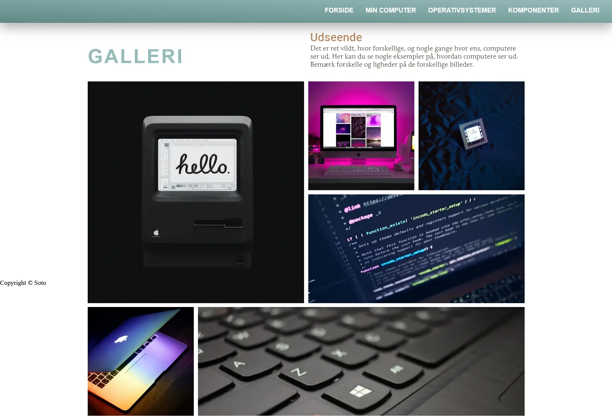

-
Go to site
Content
Course #5
This was our first proper collaborative project, and we were split into groups of four members each. The main assignment was a website designed for a real client, and as such we had to find a professional business to work with us on this project.
This was an interesting experience, as it was the first assignment that truly felt like a taste of what it would be like to work professionally within this field, having to colleborate with other professionals and work together to bring a vision to life for a client.
-
Passion for Dance | A Video Project
The first week of this course was focused on exercising the skill of going out into the field to gather content, and we were tasked with interviewing and shooting a video of a person with a passion. We learned about different technical equipment that we could access via KEA and use for our film, as well as interview techniques to use for filming.
Working in pairs, my partner and I came up with questions and decided on a person to interview. My partner knew a dancer who led a kpop dance group in the city, and we went to talk to him. He was an energetic personality and provided good takes for our respective videos--and the interview was quick as well, which made the later editing stage much easier.
This was also our first foray into github, which we would come to use a lot in the next assignment.
Go to siteVideo Editing
We had to edit the video ourselves in Adobe Premiere Pro. This proved problematic for me, as my laptop didn't possess the hardware needed to run such a demanding application. I was lucky to be able to borrow a laptop over the weekend so I could get the editing done. I had some experience editing videos before, and due to the interview being short, it was a quick job. This was fortunate as I was challenged for time due to the technical issues of my laptop.
Using editing techniques taught in class, I cut out all redundancies to make the video concise and focused. I also cut the interview questions as the answers would speak for themselves, and rearranged clips to create an organic flow. Then plugging in B-roll where appropriate, I finished out with colour grading and background music. Despite time constraints and technical issues, I am pleased with the result.
Once finished, I coded a site for the video to be hosted on with a design that matched the aesthetics of the video in terms of colour scheme and subject matter. I decided to go with bold and bright accent colours laid over top of a dark background, to give off the feeling of a spotlit stage a dancer would perform on.
-
Choice of Client
We agreed on a client quickly in our group. One of my teammates worked for a business run by a professional, who was sorely in need of a refresh to his website. We ended up working with Aria, a company owned by voice and breathing coach Jon Hollesen, who has many big companies in his resume.
My team was incredibly fortunate that Jon himself was enthusiastic and invested in our project, which made working with him a breeze.
Research & Design
This course was about content, but every step of what we had been taught on previous courses was incorporated with the aim to create a final product for a real client.
We begun by looking at the client's current website to determine what could be improved. This involved creating a styletile and sitemap of the current site. We also conducted an interview with the client to hear in his own words what needs he had for his website, and who his target audience was.
In the end we decided to start from scratch. Our research and design process had all team members involved; we created a Figjam board to collect our ideas, and drew up wireframes in Figma together. We also created a rough sitemap and user stories based on the data we had collected through our interview with the client.
-
Collection of Content
Now was the time to make use of what we learned in the first week of the course. The task of video editing was delegated to one teammate, but we were all involved in the creation of photo material.
We arranged with our client for a photoshoot at KEA, where we could set up professional lighting, and also went out with the client to get footage of him working in the field. Despite technical issues, we ended up with numerous photos and two video interviews to put on our site.

Collaborative Coding
Another of my teammates and I were the ones primarily coding the website, whilst the other two took care of content and graphics. This was a great learning experience, as coding in a vacuum you can tend to lean into your comfort zone.
We used github to collaborate on the files. In order for the process to run as smoothly as possible, my teammate and I agreed early on to be diligent with communication, so we wouldn't run into any conflicts with github nor amongst ourselves. We also organised our files neatly and left comments in the code, so we could understand what changes had been made.
-
UX Testing
We did tests of the client's current site and our redesign, primarily using the BERT method and a 5 second test. The results of the old site showed the opposite of what the client was hoping to communicate with his business: amateur, disorganised, outdated. After our redesign, we were pleased to see that we hit our target keywords.
Presentation
Finally, we made a powerpoint for our pitch and delegated topics amongst each other. In class we were advised to use the pecha kucha method of presenting, but we ended up talking too long which we received feedback on. We might have been more efficient in our presentation if we had practised our talking points more beforehand.
The Collaborative Experience
I am very thankful for my group, as they made this a smooth and enjoyable experience from beginning to end. I feel fortunate to have been part of a group so harmonious; it's normal to disagree, but the excellent communication between us made this project fun and allowed us to challenge ourselves and each other in unique ways. I can only hope my future colleagues will be as pleasant and professional.
-
Go to site
Web
Course #2
Our first course—following the introductory week—was about the basic components of coding a website from scratch. This saw us setting up all the necessary software, preparing a domain for us to host our assignments on, and coding our first real website.
I had dabbled in programming languages before, so to me this served as a healthy refresher. I tuned into the mechanics of coding quickly once I got started.
-
HTML & CSS
The programming languages we worked with during this course were html and css. We started out learning the very bare bones of how to plug content into a page by doing small exercises with pure html.
Moving on to css, we learned how to style our pages with colours and fonts to inject our personal touch. The focus was mostly on learning the basic syntax of each programming language, and how they communicated with each other.
All this was leading up to our assignment, which was to be our course entry test. Continuing this program was conditional on our passing the entry exam, and we were free to style the website however we liked provided we followed the required layout guidelines and included the content provided for the assignment.
Layout diagrams
To enhance our understanding of how the html hierarchy worked, we were taught about layout diagrams, which were also provided to us as a guideline for setting up the html structure for our assignment. The layout diagram simply shows the box-within-a-box structure that html functions by.
CSS Grid
To set up our webpage layout we were taught the basics of css grid, with exercises to train our understanding and learn how to place objects on a page.
-

Final Thoughts
In the end I finished up my page fast, as I quickly got the hang of it once I dusted off my old coding knowledge. This gave me the privilege of extra time to finetune my page until I was pleased, and also allowed me to help my classmates troubleshoot their coding errors, which was a great personal learning experience. As far as my first real website goes, I was happy with the final result.
-
Go to site
UI/UX
Course #3
The next course was focused around the object of gathering data about prospective users and implementing it in the design process. We were taught to put ourselves in the place of our user audience, so we could get specific and conscious about our design choices.
Through this course I have learned to approach the design process from the perspective of the user rather than personal preference. It has given me tools to flesh out more user-friendly designs.
-
Development & Research
Before we could begin designing a page, we had to choose the subject of our page's content and do some research. For my project, I decided to make a website for houseplant enthusiasts.
The purpose of research is to learn about the target audience and dispel assumptions in favour of collected data. My primary method was desk research, because there were plenty of online resources on my subject. I didn't conduct a formal interview, but I did speak to a couple plant lovers in my social circle to get an idea of what needs my plant website needed to cover.
Design Principles
We were taught about the Gestalt Principles of Design, which determines what makes good design based on a collection of observations on human visual perception. These include things like closure, proximity, continuation, and symmetry.
-
Styletile
This course was our first introduction to Figma, which we used to create styletile and prototype. I put together a styletile fairly quickly as I was already decided on a visual aesthetic for my webpage. I collected fonts, colour palettes, and images with my chosen design keywords in mind.
Lo-Fi & Hi-Fi
The last step in the design process before coding was to create wireframes and prototypes for the page. This was done in several steps, from sketch on paper to a detailed interactive prototype made in Figma.
We were taught different methods of brainstorming layout designs to get the process started—such as crazy 8s, which I myself used to get ideas for the different pages in my site. In the end I could pick out the designs I liked most and create a finalised layout based on a combination of ideas.
-
UX Testing
Then we moved on to the user tests, which would determine if we had achieved what we had set out to accomplish with our page. Several different testing methods were introduced to us, and I used two; the 5 second test and the think-aloud test.
I tested first on three different individuals, one of whom was not my target audience, and mostly my results were positive as they all described the page as clean and minimalistic, which was my intention. The feedback I received for aspects of improvements were all notes I had made to myself as well, which told me that my intuition about the site was correct.
Final Thoughts
I must admit, I struggled a bit with this course as I found many of the exercises repetitive, and I've found that I prefer designing during the coding process rather than sketching out plans beforehand. But I learned many techniques and methods for developing a design that keeps in mind the end user, and that is valuable. I have a more varied arsenal of tools now, and am equipped to design for future potential clients.
Unfortunately I was not feeling well towards the end of this course, and so I didn't prepare nor partake in the presentation. However, I got to practise this skill on course #5 when my group and I had to pitch our project together.
-


Animation
Course #4
Next up was our animation course, which saw us learning javascript through the process of designing and coding our own game. This was a fun endeavour, in which I personally had great enjoyment designing the game mechanics, graphics, and final website.
Go to siteI was excited for this project as I had based the game mechanics on a storyline from a personal project, a fantasy book series I am writing. As I am a massive fan of video games and a digital artist in my leisure time, I had fun designing the gameplay to incorporate story elements of my book and draw the characters in Adobe Photoshop and Illustrator.
In the end my style and colour palette for the background was heavily inspired by the game Journey, and although the characters were more anime-like in their design I am satisfied that I still managed to achieve a cohesive visual aesthetic.
-
Concept & Design
The first step in our process was concept development. We were given specific requirements for gameplay mechanics we couldn’t deviate from, so I determined to be as creative within the scope of my limitations as possible. I fleshed out complex gameplay that made use of the required mechanics in unique ways, mixing different win and lose conditions to make each game session fresh.
Graphics
Thus I set to work on the graphics. I sketched out my character and game elements in Adobe Photoshop with my Wacom graphic tablet. The background and UI elements were sketched traditionally, with pen on paper. I then transferred the sketches to Illustrator and began bringing my characters to life.
-
Code
Coding the game was both fun and a challenge. I had attempted to learn javascript many years ago when I'd first gotten into html and css, but never fully understood it until this project.
It was satisfying seeing my game start to function the way I'd intended it, and I enjoyed playing around with conditions and functions to get the exact layer of complexity I desired. The last day of the assignment I spent tweaking all the finer details to give the game a professional and polished finish.
A UML and SM diagram was created to establish the flow of my game, both from the player's perspective and for how the javascript would function in the backend.
Extra activities
Besides our main project—the game—we also received small exercises, which would serve as practise for the components of javascript we were meant to incorporate in our larger assignment. These involved exercises in javascript and creating UML and SM diagrams.